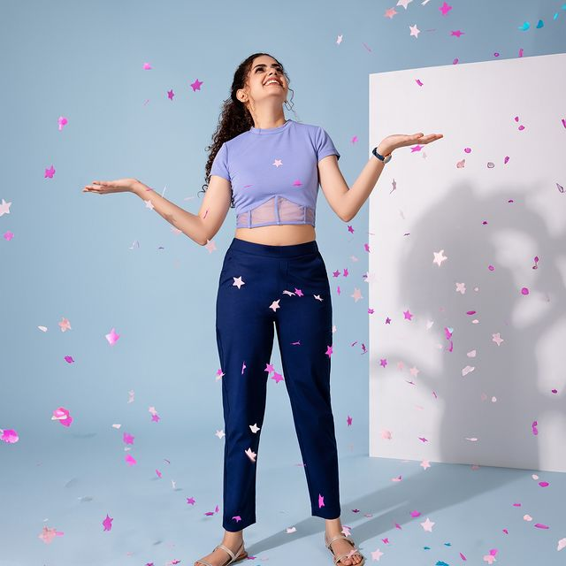
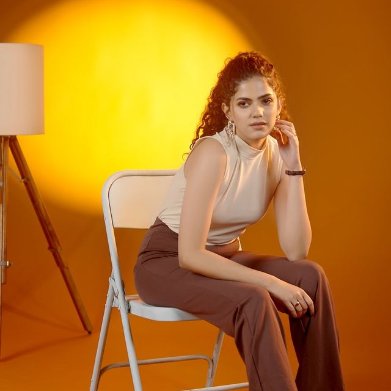

Your go-to for all your ethnic wear needs for everyday and festive occasions, with a wide
variety of styles including churidar, ankle length leggings, shimmer leggings, available
in a blend of fabrics ranging from cotton, elastane, nylon, polyester & rayon. Available
in slim fit and in sizes starting from S to 4XL in a spectrum of colors, tones and hues
you’ll never be out of options. So, grab your Kurtas and mix and match with the bottom wear
to your hearts delight to get all your ethnic to indo-western looks, get your pair today at
affordable prices.
Owning ethnic wear for women is like having a fashion treasure trove in your closet. It
effortlessly elevates your style, exudes elegance, and immerses you in cultural richness,
making it a must-have for your collection. At Go Colors, we understand the significance of
ethnic wear for women, and we're here to guide you through our extensive collection. Whether
you're looking for harem pants, patialas, salwars, or kurti pants, we have it all. So, let's
dive into the vibrant world of ethnic wear for women!


When it comes to ethnic fashion, there's a world of choices beyond just tops and dresses.
Ethnic bottom wear for women offers a delightful array of options that combine style, comfort,
and elegance. From classic salwars to trendy palazzos, these pieces are essential in any
woman's wardrobe.